← 返回阅读库 · 原论文目录
论文讲解阅读文档 · 表征学习 · v177
Representation Learning with Contrastive Predictive Coding[1807.03748]
视频时长 00:17:05；讲解文字 7,447 字符；提取讲解画面 27 张。按视频原顺序阅读，每段文字保留时间戳。
文字来自整段视频的自动语音转写，按自然停顿分段，并与 PPT / 论文页面 / 演示画面对齐。未将讲解压缩为摘要；术语、数字和口述公式请结合画面及原论文核对。 阅读稿已校正规范部分明确术语误识别；原始逐字稿和每处修改记录另行保留。
讲解画面为源视频截图（640×360），不是可编辑 PPT 文件。全片按每秒 2 帧扫描内容变化，逐步展开页保留；连续动画保留代表画面。清晰度受源视频限制。
下载完整资料包 · 含离线 HTML、PDF、Word、全部 PPT 画面和字幕。
原论文与材料
Representation Learning with Contrastive Predictive Coding · 下载完整 PDF（13 页）
按时间阅读
00:00:00–00:00:22 · 画面 001
 00:00:00–00:00:22 · 画面 001
00:00:00–00:00:22 · 画面 001大家好，今天我们来介绍 representation learning with contrastive predictive coding 这篇论文，是拖了一个多月终于开窍了。那么你可以从题目中看出呢，本质上呢，我们是通过 predict future 来预测未来这样一个任务的，然后呢，加上 contrastive learning 对比学习的这种一种手段呢，来学到一个好的类似 representation。那么在今天的视频中呢，我们首先从论文的 intuition 出发，然后呢，介绍一下 contrastive predictive coding
00:00:22–00:00:46 · 画面 002
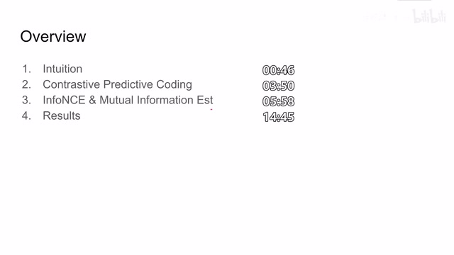
00:00:22–00:00:46 · 画面 002作者是怎么样去学这个 representation？那么随后呢，是这个 InfoNCE 和这个 mutual information estimation。这里呢，就是我们用什么样的 loss 来去训练我们的这个 model？而这样的 loss 呢，会给我们带来什么样的好处？那么最后呢，是作者回报的一些结果。那么首先，我们因为出于各种理由呢，总是想学到一个好的 representation。那比如说呢，最实际的像 predict future
00:00:46–00:01:39 · 画面 003
00:00:46–00:01:39 · 画面 003那其实呢，比如这个 future 呢，也是一种很常用的用来帮助我们学到好的 representation 的一个手段。那当然了，你想对于人来说，你对于预测未来发生的事情，比如说未来几秒内你的动作产生的后果，这个呢，还是比较有信心的。但是呢，就以视频来说，计算机必须理解视频中的内容，通过一个好的 representation 去表达视频中的内容这个在这个基础上才可能去预测在未来的几日内视频画面会发生什么样的变化。这其实是一个相对抽象的任务。所以说呢，我们需要通过这个预测未来的手段来去学到一个好的 representation，或者说一个好的 representation 呢，可以帮助我们更好的去预测未来，去理解当前的这个低维度的像视频啊音频啊这种信息。那么为了得到这个好的 representation 呢，我们需要最大化这个 mutual information
00:01:39–00:01:43 · 画面 004
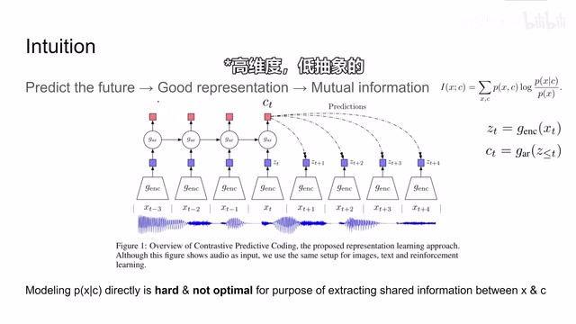
00:01:39–00:01:43 · 画面 00400:01:43–00:03:27 · 画面 005
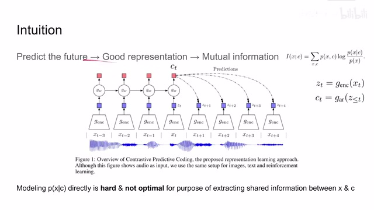
00:01:43–00:03:27 · 画面 005Mutual information 表示的是两个变量它们能够相互描述的程度。那么这个值越高，就说明我可以用一个变量去更好地表达另一个变量。这里我们看到，假如说我们原始的信号，我们把它切成一小段一小段，每一个时刻的原始信号是这个 x，那么经过一个 encoder 之后，我们得到它的 latent representation z。那么同时，我们还维护了一个 auto regressive 的 model这个 regressive model 呢，他是会把我们之前所有的 latent representation 都相当于寄到他自己的一个 hidden state 里面。这里呢，我们称这个 hidden state 叫 c。那么在 t 时刻呢，他就是 ct。那么这里的预测未来呢，就是说我在 t 时刻的时候，结合这个 ct 啊 zt，我想预测一下未来的 t 加 1 时刻 ，t 加 2 时刻等等这个未来的一些时刻我们的 latent representation 这个 z 它是什么样子的
这样呢，也避免说我直接去预测这个 x 是种高维度的信息。那么为了达成这样一个好的预测呢，我们必须使这个 z 能够尽可能多的去表达我们当前的这个我们当前的这个原始信号 x，甚至呢，以后的原始信号，甚至呢，以后的信号 xt 加 1xt 加 2 等等等等这样的信号。所以呢，我们必须最大化 x 和 c 他们之间的 mutual information那么根据定义呢，这个 mutual information 呢，它的表达式呢，你可以把它变形写成这样一个样子。那么这个呢，就是我们去学到一个好的 representation 的这么一个途径。但是随后呢，我们就注意到了，因为这个 x 呀，它是一个很高维的一个变量原始信号嘛，所以说呢，我通过这个 c 直接预测出这个 x 来是很难的，而且呢，你直接这样预测呢，并不能够最大化我们这个 mutual information
00:03:27–00:03:37 · 画面 006
00:03:27–00:03:37 · 画面 00600:03:37–00:03:38 · 画面 007
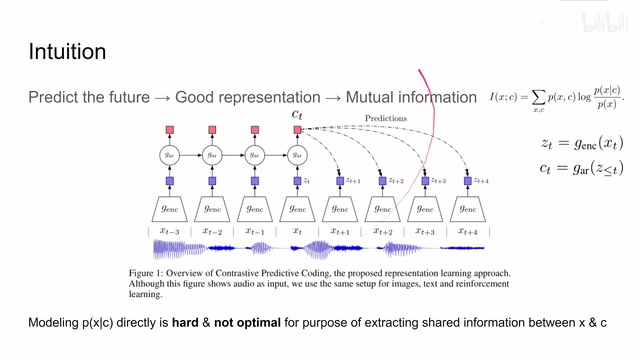
00:03:37–00:03:38 · 画面 00700:03:38–00:03:50 · 画面 008
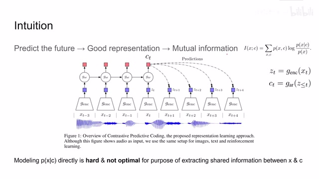
00:03:38–00:03:50 · 画面 008至于为什么呢？我们后面会介绍。所以呢，这里作者说我们的预测呢，就是预测这个 latent representation 在未来时刻的这个 z 它的值是多少，我们预测它就可以了。那么下面我们就来看作者是怎么样实现这个预测的。那正如我们之前所提到了，直接去 model 这个 given c 预测 x 这个 model 呢，它是相对困难的。所以呢，这里作者说我们直接去用一个 model 去近似这个 mutual information
00:03:50–00:05:50 · 画面 009
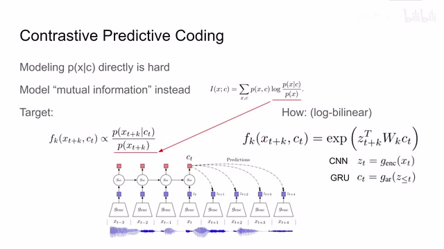
00:03:50–00:05:50 · 画面 009那右边呢，我们看到这个 mutual information 呢，可以写成这样的形式。那你如果换一种方式理解它呢，你把左边看成这个概率分布，右边呢就是我们带球的一个随机变量。那么其实呢，这个 mutual information 呢，它就是写成一个期望的形式。那么期望的里面呢，就是这个 logP given Cx 比上这个 Px。那么所以呢，其实我们的 model 呢，只要去描述这样一个概率的分数然后因为一个 batch 里面我们有很多 sample，这些 sample 求平均估计出来的正好就是这个变量的期望，而这个变量的期望就是我们这个 mutual information。所以也就是说，只要我们的 model 能够正比于这个数值，那么这样子我们的 model 就能够去建模我们的 mutual information。那么在本文的实践中，作者这里使用了一个 log by linear model，它的表达式就是这样的一个形式，是一个非常简单的 model。它中间这个 w 是我们要学习的参数
左边是未来时刻的 latent representation，右边是我们当前时刻的 hidden state。那么这里你看到 w 的它的下标也有个 k，是因为我们预测不同未来的时刻是使用不同的参数的。也就是说，这里有个 w1 来预测 t 加 1 的时刻，这里有个 w2 来预测 t 加 2 的时刻，等等。这样，而这个把原始的信号变成 latent representation 的 encoder，这里一般比如说是个 cnn，而这个 auto regressive model就是把我之前所有的 external representation 都输入来得到一个 ct。这样一个 model 呢，这里呢作者使用了一个非常简单的 gru。整个设计呢，其实他就是为了证明这么一个概念。那么好了，现在我们有了这个 model 了，我们也知道说我们想要这个 model 变成什么样子了。那我们究竟应该具体怎么样构建这个 loss 去来实现让这个 model 能够去学到学成这个样子呢？这里呢作者就使用了这个 info nce loss
00:05:50–00:05:58 · 画面 010
00:05:50–00:05:58 · 画面 01000:05:58–00:07:28 · 画面 011
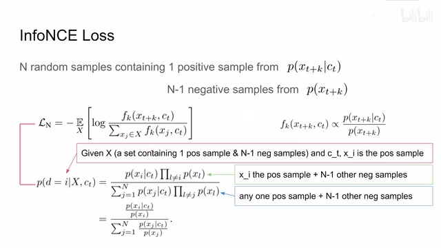
00:05:58–00:07:28 · 画面 011在这个环节里呢，我们就要证明说为什么这个 info nce loss 能够满足我们的需要。那么首先呢，我们假设我们有一个 size 为 n 的这样一个 batch，它有 n 个随机的样本，其中呢这些样本里面包括一个正样本。这个正样本呢，是我明确知道的，从这个 givenctxtk 这个 distribution 中采样出来了。更加直白来说呢，就是我在样本中记录了我在 t 时刻的时候 xt 加 k 时候的值那么同时呢这个 batch 里面呢还有 n-1 个 negative samples 那这个 negative samples 呢就是我在我的整个 replay buffer 整个这个 dataset 当中随机选的这样一个 raw data 那么这个 data 呢是在整个数据库中抽的和这个 ct 呢是没有关系的所以呢你可以看到它是这样一个形式那么构建了这样一个 batch 之后呢我们来看这个 info nce loss 它的形式呢就是这样一个形式
你可以看到它就是一个 cross entropy 的形式，这个我们在之前的这些 self-supervised learning 这些论文中介绍很多次了。那么下面我们就要证明为什么使用这样一个 loss 能够让我们的模型收敛。这里我们假设 given x 我们产生的 n 个 random sample 这样一个 batch 它叫大的 S，其中包含一个正样本，n 减一个负样本。然后 given 我们当前的一个时刻 ct假设呢 XI 这个下标位 I 的这个小样本 XI 它呢是我们其中的正样本那么这件事情发生的概率是什么呢我们来尝试写一下它的分子部分呢应该就是我 given CT 的时候从中正好拿到 XI 它的概率乘上其他的样本都不是从这个基础标准中产生的这么一个概率你看到这里是其他样本这个 X 的下标呢它的曲折范围是 N
00:07:28–00:07:29 · 画面 012
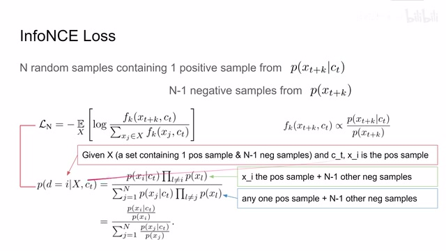
00:07:28–00:07:29 · 画面 01200:07:29–00:07:36 · 画面 013
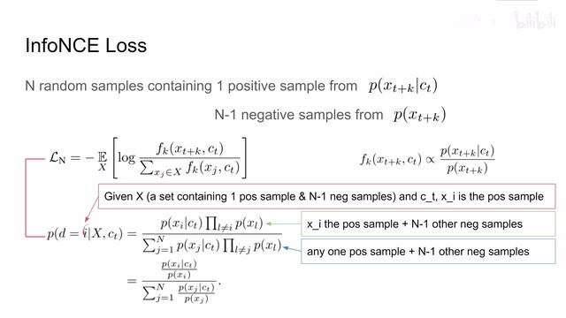
00:07:29–00:07:36 · 画面 01300:07:36–00:07:39 · 画面 014
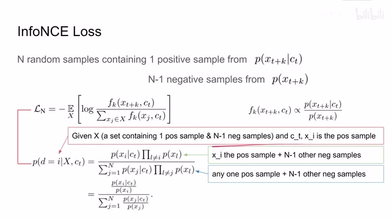
00:07:36–00:07:39 · 画面 01400:07:39–00:09:39 · 画面 015
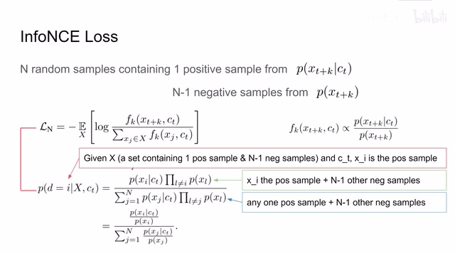
00:07:39–00:09:39 · 画面 015但是呢唯一不等于这个 i 其实呢你就可以想我在这两个技术标准中抽出 n 个样本来那么有一个样本呢是在这个条件概率下面抽取出来的那么其他样本呢都是从这个概率里面抽取出来的那么他们的抽取过程呢是相互独立的所以呢你只要把他们的概率乘起来就可以了那么这个呢是分子相当于这个条件概率的 d 等于 id 表示就是 positive sample 的 index 嘛 d 等于 i and这个 capital x 指我们能抽出这个 n 个 random sample 这个集合然后呢 and 这个 ct 就是这个时刻的 hidden state 那么分子呢就是这样一个概率那么再看分母那么分母呢就是我们要热以的条件了就是我们的 hidden state 是 ct 同时呢我们也要抽出 n 个 random samples 呢来组成这个 x 那么这个事件呢其实我们就可以分情况讨论了那么我们的 x 中呢有 n 个样本
那么我们首先讨论第一个样本是从这个 positive samplepositive distribution 这个条件概率里面其他样本是 negative samples 是从这个概率里面产生的那么这样写下来的形式就是一个形如上面这个分子的形式写下来那么这是第一种情况那么与之相似的第二种情况也就是假如说我的第二个样本是 positive samples 其他样本是 negative samples 那么它的表达式一样的也是这种形式那么你依次累加下去呢就可以得到 n 个这样的概率给它求和那么这个式子呢就是这个条件概率它的定义我们在这个基础上稍微做一个变形这里呢我们看到既然我们的这个 capital X 这 n 个 samples 已经确定下来了那么我的 PXL 假如这个 l 从 1 去到 n 那么这样呈出来这个概率呢它应该是一个定值那么这个定值呢就应该等于这一串
00:09:39–00:11:24 · 画面 016
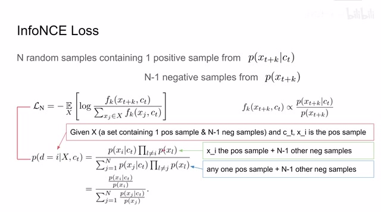
00:09:39–00:11:24 · 画面 016不带 xi 的这个概率乘上这个 pxi 那么稍作变换呢这一串的值呢就相当于是一个常数去除以 pxi 那么同理呢这个也是那么这一块的概率呢相当于一个常数去除以 pxj 那么这样子把那个常数消去我们最终呢把这个式子转化成了这样一个形式这个形式呢其实你就非常熟悉了我们看到它就是形如我们的这个 model 这个形式你只要把不同的 ct 不同的 x 填进去就好了而在你填进去之后呢就会发现这个式子呢它正好就是这个 info nce 里面的这个期望里面的这个 log 里面的这一项那么你通过最小化这个 info nce loss 相当于把这里面的这一项给它最大化了那你最大化的是什么呢其实就是这个概率
那这个概率的意思呢就是 given ct 我抽出了这 n 个 samples 在这个条件下呢使得这个 positive sample xi 它就是未来这个 xt 加 k 时刻的这个 x 这个事件的概率呢越来越大那么通俗一点来说呢就是通过最小化这个 loss 使得我们预测的这个结果就是当我们把这个 ct 和真正的 xt 加 k 输入到我们的这个 module fk 里面的时候这个 model 呢给我们一个较大的值也就是说呢这个 model 能够学习到 given 这个 ct 谁是真正的未来的 xt 加 k 那么这一点呢就保证了我们的 model 是能够预测未来的状态那么正如之前作者所说的我们不仅希望说能够预测未来的状态同时呢我们还希望我们的 hidden state c 跟我们的这个 input x 他们的 mutual information 是最大的
00:11:24–00:12:06 · 画面 017
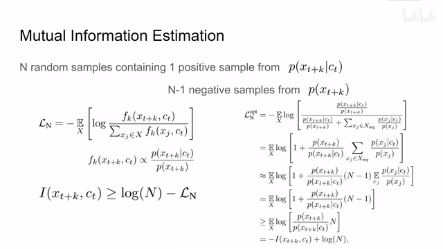
00:11:24–00:12:06 · 画面 017那么通过设置这样一个 InfoNCE loss，它恰好也能达到这样一个效果。我们来看作者是怎么样证明这个事情的。这个是我们的 InfoNCE loss。假如说我们的这个 model 能够训练的足够好的话，力量到最优了，收敛了，那么它就应该正好正比于我们这个概率的比，就是这个表达式。那我们把它替换到原来的 loss 里面，给它展开。第一步，是我们把这个 x
00:12:06–00:12:07 · 画面 018
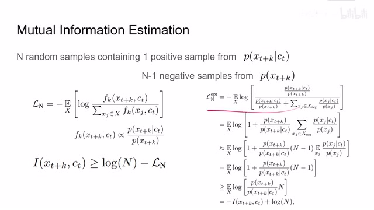
00:12:06–00:12:07 · 画面 018给它拆开。这个大 x 拆开，正样本呢单独写出来。这个呢是负样本，再单独放到一边。然后呢我们把这个负号拿进来。这样子呢，分子分母交换一下位置，划减一下，就得到形容这样的一个式子。那你可以看到呢，右边这部分呢，我们其实可以理解为对这个随机变量 p given ct xj 比上这个 p xj 对这个随机变量呢，我现在有 n 减一个 negative sample 把这些 sample 带进去呢
00:12:07–00:14:07 · 画面 019
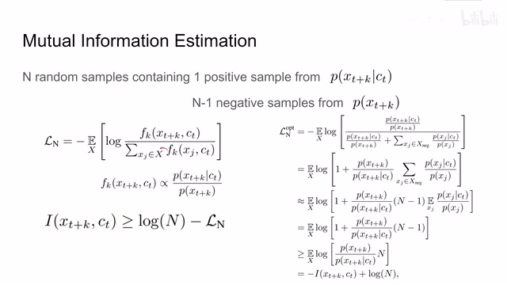
00:12:07–00:14:07 · 画面 019得到这个变量的所有的和。因为当 n 足够大的时候呢，你把 n 减一个这个 samples 它的这个值求和呢，其实就应该是等于这个期望乘上这个 n 减 1。那么严谨来说呢，这里还是应该是一个约等于。然后呢我们再看这个期望，这个期望呢我们根据定义把它展开，它里面呢就是应该是求和这个 Pxj 乘上对面这一段，正好我们发现这个 Pxj 呢跟这个 Pxj 它可以相互约掉这样子呢，这个期望的表示呢就变成了对 xj 求和，而求和符号里面呢是 given ct xj 它的概率。那你想这个概率正好对这个 xj 求和，它概率的和它肯定是一个 1。所以呢，这里呢就直接把这一项可以拿掉了。那么现在呢我们就进行到了这一步了。这个时候呢我们来观察这个 xt 加 k 啊，是我们指定的这个 positive samples
那么根据 positive sample 的定义，它是从这个 distribution 中产生的。那换种说法来说，就是这个 positive sample 来自于这个 distribution 的概率至少不应该小于来自于这个 distribution 的概率。也就是说，你的 positive sample 它是来自于你真正未来的概率至少是不应该小于你随便在数据集中抽一个 xt 加 k 它的概率的。所以这个概率是应该大于这个概率的那么这样一来呢，这个分数呢就应该是小于等于 1 的。所以呢你就可以做出这样一个不等式。那么把这个式子拆开，再结合我们 Mutual Information 的定义，我们对 Mutual Information 通过期望来估计它，那么最后呢就写成了这样一个形式。那么等式左右两边交换一下位置，那么就是得到这样一个式子
00:14:07–00:14:44 · 画面 020
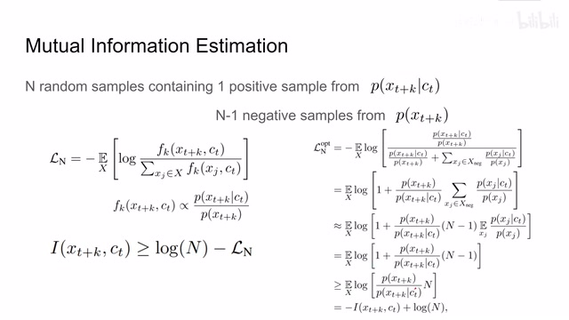
00:14:07–00:14:44 · 画面 020那么你可以看到的这个 log n 呢，它是一个常数。你通过最小化这个 loss 呢，能够抬高这个 lower bound。这个 lower bound 呢，就把我们的 mutual information 给它抬起来了。好的，那么以上就是本文的核心的数学的思想，就是为什么构建这个 info nce 它能够实现我们这些诸多的好处。那么我们直接来看到实现结果吧。首先呢是这个 audio
00:14:44–00:15:06 · 画面 021
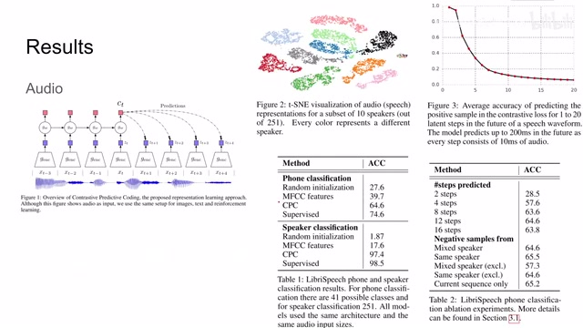
00:14:44–00:15:06 · 画面 021这里呢，作者是做了这个 phone classification 和 speaker classification。那可以看到，本文的方法呢，是 outperform 之前的这些方法了。然后呢，很接近于这个有监督的方法。这里呢，讨论说我预测未来多少步是合适的同时呢，也测试 negative sample 从不同的地方来得到这个表现。那么在这里呢，你可以看到，这是预测未来 n 步的这个我们的准确率。那在预测未来一步和两步的时候呢，那准确率呢，其实是非常高的
00:15:06–00:15:07 · 画面 022
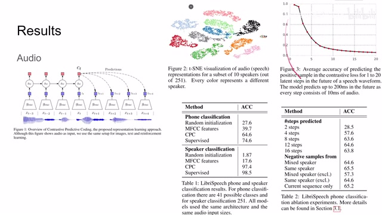
00:15:06–00:15:07 · 画面 02200:15:07–00:15:26 · 画面 023
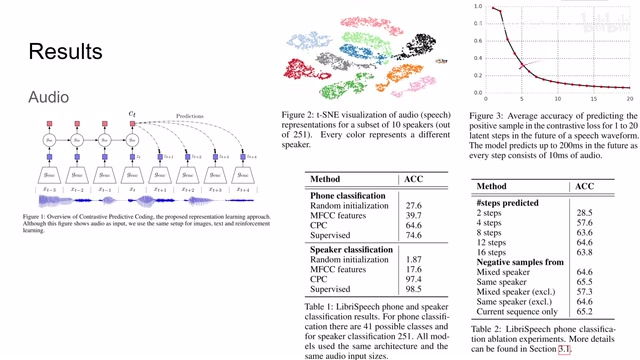
00:15:07–00:15:26 · 画面 023那么这里呢作者还做了一个可视化，这是 speaker classification。那我们可以看到这个 representation 很好，大部分同一个 label 的这个样本呢可以聚在一起。那么此外呢，作者还测试了这个 image classification，这里呢是在 imagenet 上测试的。那对于一张 image 它怎么来预测预来呢，这里呢作者就是我一个划窗去不断的划我们的原始图像得到这一个小方块，然后呢把这一个小方块送到我们的 encoder 里面
00:15:26–00:16:27 · 画面 024
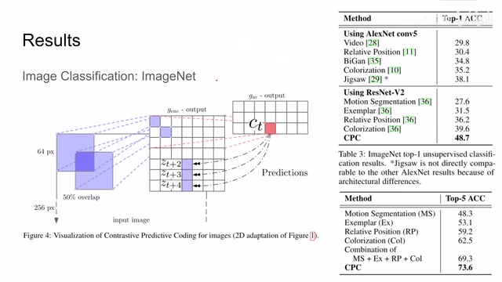
00:15:26–00:16:27 · 画面 024得到这个 latent representation 这个 Z，这样子划出来呢，就得到一堆 Z。然后呢，把这一堆 Z 呢，扔到我们的这个 autoregressive model 里面，它呢就可以帮我们预测每一个时刻，其实就是我划到每一个块的时候，我们的这个 hidden state 这个 C。那么有了 hidden state 之后呢，我想预测的是这个 patch 它往下几行，比如往下一行，往下两行，往下三行，这样子这些 patch 他们的 latent representation
这个就是预测的过程。那么可以看到，使用不同的 backbone，本人的方法还是 outperform 之前这些方法的，而且幅度很大。那么对于 top5 的准确率也是一样的报答前面这些小老弟。那么最后作者还使用 CPC 去测试了一些 NLP 任务还有 reinforcement learning 这些任务，这里我们就不详细的说明了。本身上他就是想表达说 CPC
00:16:27–00:16:31 · 画面 025
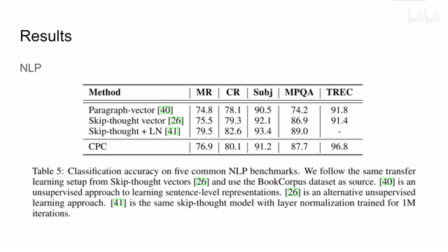
00:16:27–00:16:31 · 画面 02500:16:31–00:17:05 · 画面 026
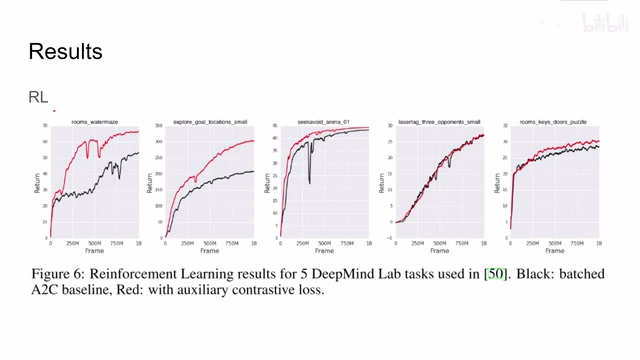
00:16:31–00:17:05 · 画面 026这个概念无论你做什么样的任务都是 OK 的因为它是最大化的 mutual information 它在理论上就可以帮助我们学到一个好的 representation 帮助我们更好地去预测未来来实现更好的下游的任务的表达总的来说这篇论文的理论非常巧妙它其实也不复杂就是你需要开个窍理解它想要表达的东西那么以上就是我对这篇论文的简单的分析感谢您的收看再见
00:17:05–00:17:05 · 画面 027
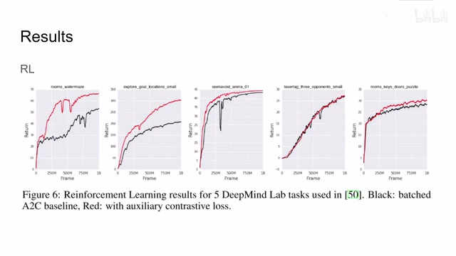
00:17:05–00:17:05 · 画面 027转写与来源说明 · 0 个自动复核提示
保留 37 个原始语音片段，0 个片段触发自动复核提示。提示仅用于定位可能的术语、重复或识别问题，不等于已确认错误。
讲解画面为源视频截图（640×360），不是可编辑 PPT 文件。全片按每秒 2 帧扫描内容变化，逐步展开页保留；连续动画保留代表画面。清晰度受源视频限制。
原视频：paper/合集_2026-10-16_表征学习/[论文简析]Representation Learning with Contrastive Predictive Coding[1807.03748].mp4
SHA-256：6e6ebc607177fd3c636c3d4684ae9b1117eb0a37eadecf7441c679a685f06aaa
全文按视频语音与画面制作。原论文可从上方链接下载；完整资料包保留全文、原始逐字稿、字幕和校对记录。